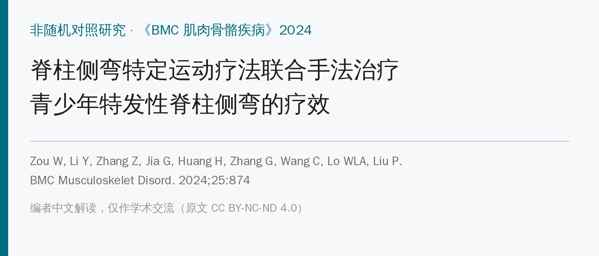
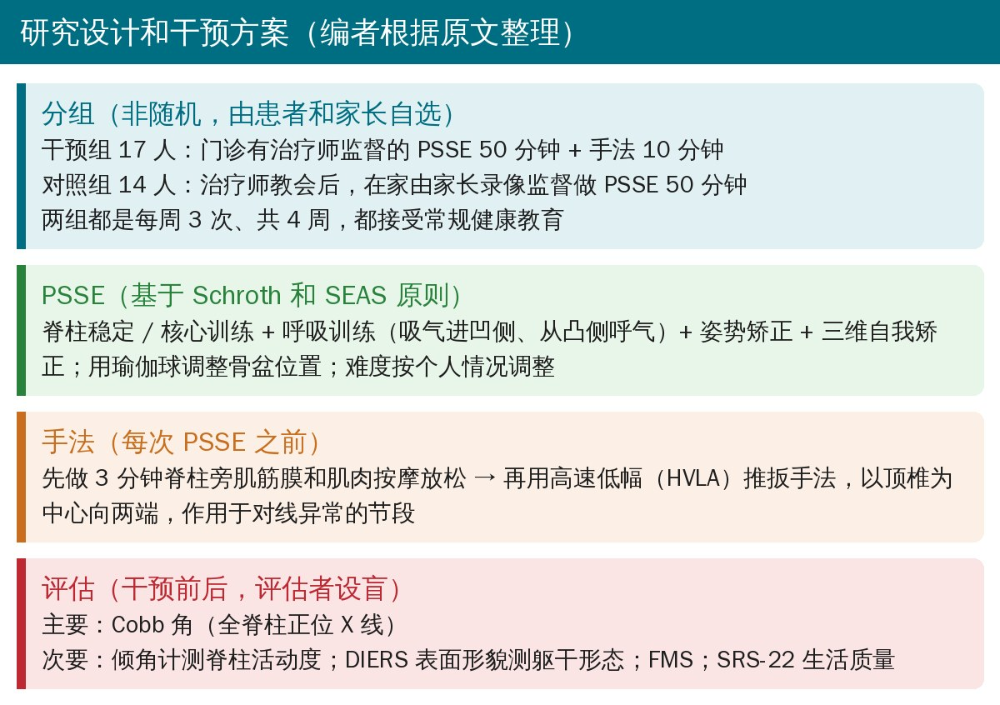
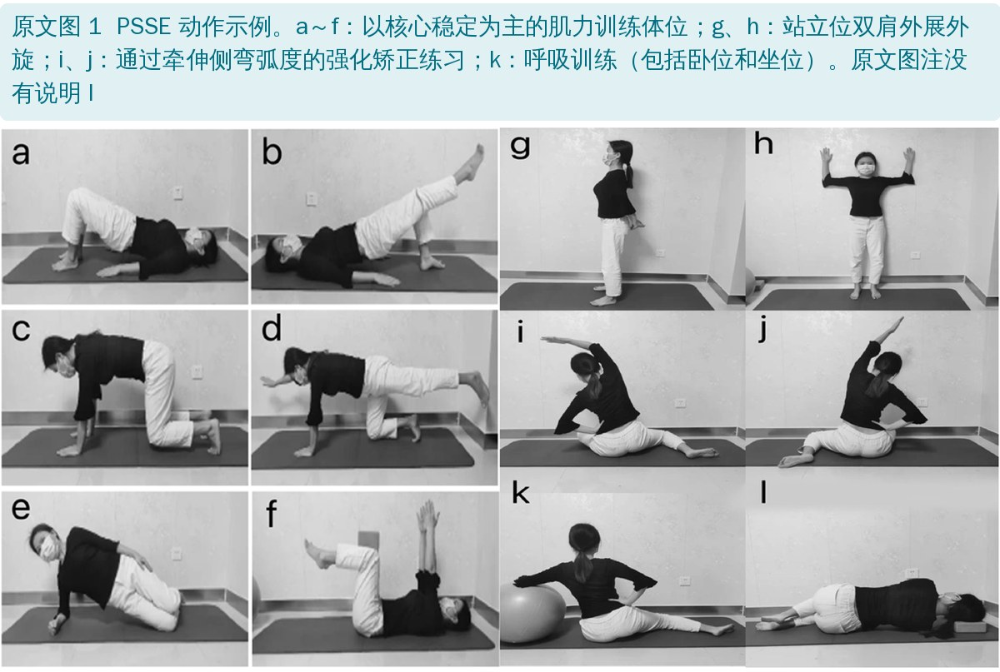
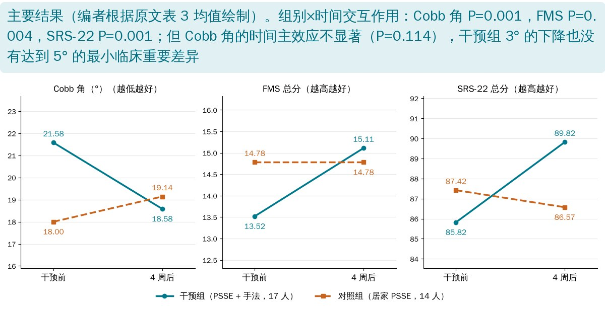

🔖原文信息（编者中文重排）
📚 文献信息
▪ Zou W, Li Y, Zhang Z, Jia G, Huang H, Zhang G, Wang C, Lo WLA, Liu P. The efficacy of combined physiotherapeutic scoliosis-specific exercises and manual therapy in adolescent idiopathic scoliosis. BMC Musculoskelet Disord. 2024;25:874. doi:10.1186/s12891-024-07974-1
▪ 作者单位：中山大学附属第一医院康复医学科
▪ 研究类型：非随机对照研究（患者和家长自选组别），31 名青少年特发性脊柱侧弯（AIS）患者，干预 4 周；临床试验在研究结束后补注册（ChiCTR2300071357）
AIS 全球患病率约 2%～3%。轻中度 AIS 的保守治疗以支具和脊柱侧弯特定运动疗法（PSSE）为主：Cobb 角 >25° 一般建议支具，<25° 首选 PSSE（Schroth、SEAS 等），通过三维自我矫正和运动控制训练延缓进展。但系统评价认为 PSSE 的证据仍不确定。
手法治疗（MT）在临床上也常用于侧弯患者，可能减轻疼痛、降低脊柱僵硬、刺激肌梭和感觉运动整合，但它能否减小 Cobb 角同样没有定论。把两者结合的研究很少，这篇就是想看看：PSSE 加上手法，对躯干形态、脊柱活动度、动作能力和生活质量有没有额外好处。

🔖研究设计和干预方案（编者根据原文整理）
• 对象：2021 年 2 月至 2022 年 2 月中山大学附一门诊，10～18 岁，胸段或腰段 Cobb 角 10°～45°；排除非特发性侧弯、运动禁忌、既往接受过侧弯治疗或支具、无法进行运动训练者
• 分组：不是随机的，患者自己选组。干预组 17 人，对照组 14 人；两组都没有用支具
• 评估：干预前和 4 周后各测一次；3 名评估者不知道分组，每人负责固定几项指标，每项测 2 次取平均
• 统计：双因素重复测量方差分析（组别 × 时间）；另用独立样本 t 检验比较两组的变化值和变化率；Cobb 角和 SRS-22 用文献给出的最小临床重要差异（MCID：5°、每题 0.11 分），其余指标的 MCID 取基线标准差 × 0.2

🔖原文图 1：PSSE 动作示例
• 脊柱稳定和核心训练（图 1 a～f）：桥式、单腿桥、四点跪位、鸟狗式、侧桥、仰卧位手脚上举等，增强脊柱周围肌群
• 姿势矫正（图 1 g、h）：靠墙站立，双肩外展外旋；每天练习，学会自己识别、自己调整姿势
• 强化矫正练习（图 1 i、j）：通过侧屈“拉开”侧弯弧度；训练中要求保持中立位或矫正位
• 呼吸训练（图 1 k）：卧位和坐位，吸气时把气吸进凹侧，呼气时从凸侧呼出，配合矫正动作，目的是改善椎体旋转和胸廓不对称
• 用瑜伽球通过旋转调整不良的骨盆位置；难度按个人临床需要调整，保证患者能配合完成
• 先按摩 3 分钟：放松脊柱周围的肌筋膜和肌肉，减轻张力，降低随后快速施压时受伤的风险，也减少软组织紧张造成的活动受限
• 再做高速低幅（HVLA）推扳：作用于临床评估发现对线异常的节段，以顶椎为中心，向上下两端依次进行
• 作者引用文献认为青少年 HVLA 后严重不良事件比较少见；本研究没有报告不良事件
治疗师先教会患者和家长，家长在 50 分钟训练中录像；之后在家由家长监督、每周 3 次、共 4 周，依从性没有监测。所以两组的差别其实有两个：有没有治疗师当面监督，和有没有手法。
| 基线特征 | 干预组（17 人） | 对照组（14 人） | P 值 |
|---|---|---|---|
| 性别（男:女） | 6:11 | 2:12 | 0.240 |
| 年龄（岁） | 12.53（1.32） | 13.43（2.27） | 0.119 |
| 身高（cm） | 162.35（10.53） | 157.86（8.90） | 0.222 |
| 体重（kg） | 44.76（7.74） | 46.43（6.64） | 0.495 |
| Cobb 角（°） | 21.58（8.15） | 18.00（5.42） | 0.170 |
原文表 2：两组基线特征，均值（标准差）（中文翻译）
SD：标准差；P 值：概率值；显著性水平设为 P = 0.05。
• Risser 分级：干预组 0～2 级 12 人、≥3 级 5 人；对照组 0～2 级 10 人、≥3 级 4 人
• 弯型差别很大：干预组胸弯 9、腰弯 2、胸腰弯 2、双主弯 4；对照组胸弯 3、腰弯 4、胸腰弯 6、双主弯 1

🔖主要结果（编者根据原文表 3 均值绘制）
• Cobb 角：干预组 21.58° → 18.58°（降 3.00°），对照组 18.00° → 19.14°（升 1.14°）；组别×时间交互作用显著（P = 0.001），但两组都没达到 5° 的 MCID
• FMS 和 SRS-22：干预组 FMS +1.58 分、SRS-22 +4.00 分，都超过 MCID；对照组没有变化或略降
• 脊柱活动度：干预组胸椎前屈、腰椎前屈、后伸、左右侧屈都增加，超过 MCID；交互作用均显著
• 躯干形态：干预组椎体旋转、顶椎偏移、躯干长度等的变化大于对照组；矢状面 / 冠状面失衡、后凸角、前凸角、骨盆扭转的组间差异都不显著
作者结论：PSSE 联合手法在改善 AIS 症状和生活质量方面显示出潜在益处，但需要更大规模的研究证实。
• 非随机、自选组别：愿意每周来医院 3 次的家庭，和选择居家训练的家庭，本身就可能不一样；两组的弯型分布差别很大，干预组基线 Cobb 角也大 3.6°，更大的弯有更多“回落”空间
• 两个变量混在一起：干预组多了治疗师监督，又多了手法，对照组还没有监测依从性。效果到底来自手法、监督还是依从性，分不开——作者自己也承认缺少“单纯 PSSE（有监督）”组
• Cobb 角 3° 在测量误差范围内：Cobb 角的测量误差通常有 3°～5°，而且时间主效应不显著（P = 0.114），摘要说“显著下降”言过其实
• MCID 定得很宽松：除 Cobb 角和 SRS-22 外，MCID 都用“0.2 × 基线标准差”，这其实是“小效应量”的门槛，不是患者能感受到的临床意义
• 只有 4 周、没有随访：侧弯治疗的关键是生长期内能否阻止进展，4 周的变化说明不了长期结局
• 样本小、补注册：31 人，研究结束一年多后才注册；纳入了 25°～45°本应考虑支具的患者，却都没用支具
• “无显著差异（p < 0.05）”：结果部分说两组基线“没有显著差异（p < 0.05）”，应为 p > 0.05
• 表 5 胸椎前屈的 P 值算错：时间主效应 F = 4.724（自由度 1, 29），对应 P ≈ 0.038，表中写 0.220
• 表 8 矢状面失衡的 P 值算错：t = 1.280（自由度 29），对应 P ≈ 0.21，表中写 0.070
• 表 8 躯干长度的变化率差了 10 倍：变化值 5.94 mm、基线 406 mm，变化率应约 0.015，表中写 0.15（0.01）
• 变化值和变化率正负号矛盾：SRS-22 对照组变化值 −0.85，变化率却是 +0.008；腰椎左、右侧屈对照组变化值 −2.42、−3.07，变化率却是 +0.06、+0.07；冠状面失衡干预组变化值 +2.45，变化率却是 −1.12
• 变化值的方向不统一：Cobb 角、椎体旋转、顶椎偏移等用“前 − 后”（下降为正），FMS、SRS-22、活动度、躯干长度用“后 − 前”（增加为正），表中没有说明
• 后凸角、前凸角“下降”被当成改善：原文把后凸角、前凸角减小也算作达到 MCID 的改善，但 AIS 常见胸椎后凸减小（平背），后凸进一步减小未必是好事
• 正文说法和表 7 不符：结果说干预组骨盆倾斜在不同时间点有显著差异，但表 7 骨盆倾斜的时间主效应 P = 0.062、交互作用 P = 0.059，都不显著；文中也没报告组内事后检验
• 表 3 FMS 数字可疑：对照组干预前后 FMS 完全相同（14.78（1.25）），时间主效应和交互作用的 F、P 也完全相同（9.664、0.004）
• 表 6 突然出现 U 检验：腰椎右侧屈的变化率用了 Mann-Whitney U 检验（U = 21.00），方法部分没有提到
• 局限性部分提到“随访数据和影像数据”：但研究只有干预前后两次评估，没有随访
• 图注和图对不上：原文图 1 有 a～l 共 12 幅，图注只说明到 k
• 有监督的 PSSE 很可能比“教完回家自己练”更有效：这篇和以往研究都提示，居家训练的依从性和动作质量是大问题。至少要定期复查动作、给出可执行的家庭计划
• 手法可以作为 PSSE 前的“准备”：先松解软组织、改善节段活动，再做三维矫正和呼吸训练，思路合理；但别把 Cobb 角的改善归功于手法，这篇的设计证明不了
• 呼吸训练的要点：吸气进凹侧、从凸侧呼出，配合矫正姿势
• 对青少年做 HVLA 要谨慎：先做评估，排除禁忌，手法轻、节段准；家长要知情
• 看疗效别只盯 Cobb 角：活动度、FMS、SRS-22、外观对患者同样重要；但 Cobb 角 <5° 的变化要考虑测量误差
• 25° 以上、仍在生长期的患者，按 SOSORT 建议评估支具，不应只靠运动和手法
| 参数 | 单位 | 定义ᵃ |
|---|---|---|
| 躯干长度 | mm | VP 到 DL 与 DR 中点（DM）的距离 |
| 矢状面失衡 | mm | VP 与过 VP 的外部铅垂线之间的距离 |
| 冠状面失衡 | mm | VP 与 DM 之间的侧向距离 |
| 后凸角 | ° | ICT 和 ITL 处体表切线之间的夹角 |
| 前凸角 | ° | ITL 和 ILS 处体表切线之间的夹角 |
| 椎体旋转（RMS） | ° | 对称线上体表法线水平分量的均方根 |
| 椎体旋转（MAX） | ° | 对称线上体表法线水平分量的最大值 |
| 顶椎偏移（RMS） | mm | 冠状面上脊柱中线偏离 VP–DM 连线的均方根偏差 |
| 顶椎偏移（MAX） | mm | 冠状面上脊柱中线偏离 VP–DM 连线的最大偏差 |
| 骨盆倾斜 | mm | DL 与 DR 的高度差 |
| 骨盆扭转 | ° | DL 和 DR 处体表法线的扭转 |
原文表 1：Formetric 4D 输出的躯干形态指标（中文翻译）
VP：隆椎（第 7 颈椎棘突）；DL：左侧腰窝；DR：右侧腰窝；DM：DL 与 DR 的中点；ICT：颈胸段拐点；ITL：胸腰段拐点；ILS：腰骶段拐点。ᵃ 躯干形态参数定义改编自 DIERS formetric III 4D 手册（2010-06-21 创建，修订版 5）。
| 指标 | 干预组 前 | 干预组 4 周 | 对照组 前 | 对照组 4 周 | 时间 F / P | 组别 F / P | 交互 F / P |
|---|---|---|---|---|---|---|---|
| Cobb 角（°） | 21.58（8.15） | 18.58（9.68） | 18.00（5.42） | 19.14（6.43） | 2.651 / 0.114 | 0.307 / 0.584 | 13.190 / 0.001 |
| FMS（分） | 13.52（2.23） | 15.11（2.14） | 14.78（1.25） | 14.78（1.25） | 9.664 / 0.004 | 0.574 / 0.455 | 9.664 / 0.004 |
| SRS-22（分） | 85.82（8.16） | 89.82（7.55） | 87.42（7.49） | 86.57（6.99） | 5.290 / 0.029 | 0.096 / 0.759 | 12.635 / 0.001 |
原文表 3：Cobb 角、FMS 和 SRS-22 总分干预前后的方差分析结果，均值（标准差）（中文翻译）
FMS：功能性动作筛查；SRS-22：脊柱侧弯研究学会 22 项问卷；SD：标准差；F：F 值；P：概率值。
| 指标 | MCID | 变化值 干预组 | 变化值 对照组 | t / p | 变化率 干预组 | 变化率 对照组 | t / p |
|---|---|---|---|---|---|---|---|
| Cobb 角（°） | 5.00 | 3.00（3.16） | −1.14（3.15） | 3.632 / 0.001 | 0.16（0.20） | −0.06（0.17） | 3.435 / 0.002 |
| FMS（分） | 0.44 | 1.58（1.83） | 0.00（0.55） | 3.379 / 0.003 | 0.13（0.15） | 0.001（0.03） | 3.302 / 0.004 |
| SRS-22（分） | 2.42 | 4.00（4.41） | −0.85（2.82） | 3.555 / 0.001 | 0.04（0.05） | 0.008（0.03） | 3.455 / 0.002 |
原文表 4：Cobb 角、FMS 和 SRS-22 总分变化率、变化值的 t 检验结果及 MCID（中文翻译）
MCID：最小临床重要差异；t：t 值；p：概率值。干预组 17 人，对照组 14 人；数值为均值（标准差）。
| 指标 | 干预组 前 | 干预组 4 周 | 对照组 前 | 对照组 4 周 | 时间 F / P | 组别 F / P | 交互 F / P |
|---|---|---|---|---|---|---|---|
| 胸椎前屈（°） | 19.47（10.00） | 27.88（5.82） | 24.35（11.73） | 22.42（8.10） | 4.724 / 0.220 | 0.009 / 0.923 | 12.017 / 0.002 |
| 腰椎前屈（°） | 66.58（10.45） | 79.88（15.88） | 68.57（11.79） | 66.85（12.64） | 12.800 / 0.001 | 1.595 / 0.217 | 21.502 / <0.001 |
| 腰椎后伸（°） | 18.94（8.08） | 25.17（5.49） | 25.71（5.39） | 23.42（3.22） | 1.976 / 0.170 | 2.418 / 0.131 | 9.196 / 0.005 |
| 腰椎左侧屈（°） | 19.70（7.05） | 32.85（5.25） | 27.71（6.30） | 25.28（4.93） | 22.852 / <0.001 | 0.016 / 0.899 | 48.338 / <0.001 |
| 腰椎右侧屈（°） | 21.17（9.19） | 29.88（4.97） | 25.85（7.95） | 22.78（4.80） | 6.133 / 0.019 | 0.283 / 0.599 | 26.797 / <0.001 |
原文表 5：脊柱活动度干预前后的方差分析结果，均值（标准差）（中文翻译）
| 指标 | MCID | 变化值 干预组 | 变化值 对照组 | t / p | 变化率 干预组 | 变化率 对照组 | t / p |
|---|---|---|---|---|---|---|---|
| 胸椎前屈（°） | 2.00 | 8.41（10.14） | −1.92（5.06） | 3.467 / 0.002 | 0.86（1.11） | −0.01（0.19） | 3.188 / 0.005 |
| 腰椎前屈（°） | 2.09 | 13.29（11.46） | −1.71（4.19） | 5.005 / <0.001 | 0.20（0.19） | −0.02（0.06） | 4.728 / <0.001 |
| 腰椎后伸（°） | 1.61 | 6.23（9.64） | −2.28（4.54） | 3.232 / 0.004 | 0.57（0.67） | −0.05（0.23） | 3.610 / 0.002 |
| 腰椎左侧屈（°） | 1.41 | 13.11（7.08） | −2.42（4.87） | 6.953 / <0.001 | 0.94（0.93） | 0.06（0.14） | 4.396 / <0.001 |
| 腰椎右侧屈（°） | 1.81 | 8.70（6.95） | −3.07（5.39） | 5.177 / <0.001 | 0.84（1.37） | 0.07（0.18） | U = 21.00 / <0.001 |
原文表 6：脊柱活动度变化率、变化值的 t 检验结果及 MCID（中文翻译）
| 指标 | 干预组 前 | 干预组 4 周 | 对照组 前 | 对照组 4 周 | 时间 F / P | 组别 F / P | 交互 F / P |
|---|---|---|---|---|---|---|---|
| 躯干长度（mm） | 406.10（45.44） | 412.04（44.21） | 404.22（39.05） | 401.29（33.49） | 0.880 / 0.356 | 0.182 / 0.673 | 7.598 / 0.010 |
| 椎体旋转 RMS（°） | 5.95（2.57） | 4.60（2.08） | 5.46（1.84） | 5.76（1.65） | 2.439 / 0.129 | 0.245 / 0.624 | 5.975 / 0.021 |
| 椎体旋转 MAX（°） | 11.21（4.58） | 8.37（3.14） | 9.95（3.18） | 10.78（2.80） | 3.169 / 0.086 | 0.251 / 0.620 | 10.635 / 0.003 |
| 顶椎偏移 RMS（mm） | 8.26（4.86） | 4.99（2.41） | 8.03（4.30） | 7.53（4.54） | 12.385 / 0.001 | 0.693 / 0.412 | 6.669 / 0.015 |
| 顶椎偏移 MAX（mm） | 15.06（8.56） | 8.90（3.68） | 14.61（7.23） | 12.44（7.54） | 17.506 / <0.001 | 0.446 / 0.509 | 4.026 / 0.054 |
| 矢状面失衡（mm） | 2.77（1.58） | 2.24（1.80） | 2.95（1.61） | 3.00（1.29） | 1.169 / 0.288 | 0.779 / 0.385 | 1.637 / 0.211 |
| 冠状面失衡（mm） | 7.62（4.62） | 5.16（3.25） | 8.13（5.48） | 8.39（6.94） | 0.913 / 0.347 | 1.671 / 0.206 | 1.381 / 0.249 |
| 后凸角（°） | 36.29（10.36） | 33.27（8.85） | 37.70（8.78） | 36.44（11.19） | 3.918 / 0.057 | 0.459 / 0.503 | 0.666 / 0.421 |
| 前凸角（°） | 40.97（8.38） | 38.57（10.25） | 34.43（10.68） | 34.70（10.25） | 0.551 / 0.464 | 2.548 / 0.121 | 0.861 / 0.361 |
| 骨盆扭转（°） | 2.66（1.29） | 2.34（1.66） | 1.92（1.17） | 2.14（1.07） | 0.049 / 0.826 | 1.205 / 0.281 | 1.451 / 0.238 |
| 骨盆倾斜（mm） | 2.32（2.46） | 0.96（1.26） | 2.19（1.73） | 2.20（1.91） | 3.781 / 0.062 | 0.871 / 0.358 | 3.861 / 0.059 |
原文表 7：表面形貌躯干形态指标干预前后的方差分析结果，均值（标准差）（中文翻译）
| 指标 | MCID | 变化值 干预组 | 变化值 对照组 | t / p | 变化率 干预组 | 变化率 对照组 | t / p |
|---|---|---|---|---|---|---|---|
| 躯干长度（mm） | 9.08 | 5.94（8.05） | −2.92（9.87） | 2.757 / 0.010 | 0.15（0.01） | −0.006（0.02） | 2.778 / 0.009 |
| 椎体旋转 RMS（°） | 0.51 | 1.35（1.82） | −0.29（1.92） | 2.444 / 0.021 | 0.16（0.25） | −0.14（0.47） | 2.334 / 0.027 |
| 椎体旋转 MAX（°） | 0.91 | 2.84（3.03） | −0.83（3.24） | 3.261 / 0.003 | 0.21（0.19） | −0.15（0.39） | 3.186 / 0.005 |
| 顶椎偏移 RMS（mm） | 0.97 | 3.27（3.71） | 0.50（1.63） | 2.582 / 0.015 | 0.33（0.19） | 0.05（0.25） | 3.560 / 0.001 |
| 顶椎偏移 MAX（mm） | 1.71 | 6.16（6.73） | 2.16（3.46） | 2.007 / 0.054 | 0.34（0.20） | 0.13（0.28） | 2.386 / 0.024 |
| 矢状面失衡（mm） | 0.31 | 0.53（1.00） | −0.04（1.51） | 1.280 / 0.070 | 0.17（0.45） | −0.44（1.26） | 1.743 / 0.101 |
| 冠状面失衡（mm） | 0.92 | 2.45（6.33） | −0.25（6.46） | 1.175 / 0.249 | −1.12（4.18） | −0.53（1.56） | −0.494 / 0.625 |
| 后凸角（°） | 2.07 | 3.02（5.68） | 1.25（6.34） | 0.816 / 0.421 | 0.06（0.15） | 0.03（0.17） | 0.518 / 0.608 |
| 前凸角（°） | 1.67 | 2.38（8.62） | −0.26（6.89） | 0.928 / 0.361 | 0.04（0.20） | −0.04（0.32） | 0.976 / 0.337 |
| 骨盆扭转（°） | 0.25 | 0.31（1.23） | −0.22（1.24） | 1.205 / 0.238 | 0.07（0.37） | −1.54（5.25） | 1.155 / 0.269 |
| 骨盆倾斜（mm） | 0.49 | 1.35（2.37） | 0.007（1.16） | 2.089 / 0.047 | 0.67（0.61） | 0.08（0.60） | 2.940 / 0.008 |
原文表 8：表面形貌躯干形态指标变化率、变化值的 t 检验结果及 MCID（中文翻译）
欢迎关注悦美力公众号，获取更多物理治疗的专业知识！
📄参考文献：
Zou W, Li Y, Zhang Z, Jia G, Huang H, Zhang G, Wang C, Lo WLA, Liu P. The efficacy of combined physiotherapeutic scoliosis-specific exercises and manual therapy in adolescent idiopathic scoliosis. BMC Musculoskelet Disord. 2024;25:874. doi:10.1186/s12891-024-07974-1
原文以 CC BY-NC-ND 4.0（署名—非商业性使用—禁止演绎）许可发表。本文为非商业的学术交流解读：原文图 1 原样引用，仅加中文图注；表 1～8 为中文翻译；方案卡和结果图为编者根据原文数据整理绘制。如有侵权请联系删除。